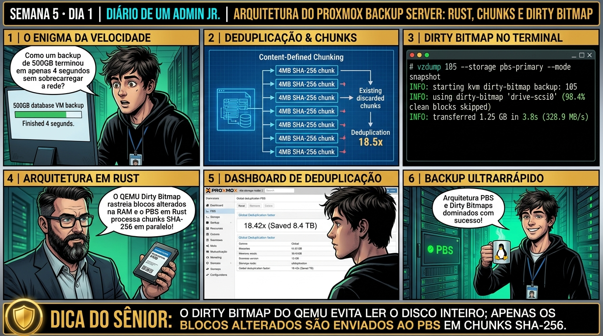

DIARIO DE UM ADMIN JR. | PROXMOX VE & PBS — DA BASE AO CLUSTER
Antes de começar — 20 segundos de memória (Semana 4, Dia 5)
1. Semana passada, quais dois protocolos você usou para compartilhar storage bruto pela rede entre servidores? 2. Aquele storage compartilhado guardava os discos das VMs em bruto. Hoje você conhece um servidor de backup dedicado que NÃO guarda os dados assim — o que ele guarda no lugar?
1. NFSv4 e SMB. 2. Chunks — blocos dinâmicos de ~4MB identificados por hash SHA-256. É a diferença entre um storage de rede genérico (guarda o disco inteiro, do jeito que é) e o PBS (quebra tudo em pedaços e só guarda cada pedaço único uma vez, mesmo que venha de servidores diferentes).
🔗 Conecta com a Semana 4: Você dominou storages locais e de rede. Agora você entra no MÊS 2 conhecendo o Proxmox Backup Server (PBS): a solução empresarial escrita em Rust que substitui backups pesados tradicionais por deduplicação global baseada em chunks de 4MB.
🔓 Privilégio de hoje: Arquitetura de Backup Empresarial (PBS). Você analisa a estrutura de chunks, SHA-256 e o motor de alta velocidade em Rust.
Semana 5 · Dia 1 | Nível Júnior — Proxmox Backup Server & Integração
Arquitetura do Proxmox Backup Server: Rust, Chunks e Deduplicação
Entendendo a quebra dinâmica de blocos (Content-Defined Chunking) e deduplicação global em nível corporativo
ANTES DE ALTERAR, OBSERVE. DEPOIS DE ALTERAR, VALIDE.

1. O chamado
#5001PRIORIDADE ALTA08:30aberto por: diretoria de TI
"O backup via vzdump está saturando a rede e consumindo 100TB a cada duas semanas. Chegou um PBS novo — preciso entender por que ele resolve isso antes de migrar tudo."
Antes de migrar 40 VMs pra esse novo servidor, o que exatamente ele faz diferente de um storage comum?
💡 Passa o mouse nas palavras destacadas pra ver uma dica rápida — clica se quiser a explicação completa com analogia.
2. O sênior te conta
🧑🏫 antes dos termos técnicos, a história de hoje
Hoje iniciamos o Módulo 2 e o Júnior me perguntou por que a empresa precisava do Proxmox Backup Server (PBS) se o Proxmox VE já fazia backup clássico com o vzdump gerando arquivos .vma.zst compactados.
Expliquei a matemática do desastre: se você tem 50 VMs de 100GB e roda vzdump diário, em uma semana você precisa de 35 Terabytes de storage, e a rede fica saturada por horas copiando arquivos gigantescos. O PBS revoluciona isso: ele fatia os dados em chunks dinâmicos de 4MB identificados por hash criptográfico SHA-256 e armazena com deduplicação global!
Além disso, com o QEMU Dirty Bitmap, o hypervisor mantém na memória RAM apenas os blocos que foram alterados desde o último backup. Rodamos o segundo backup da VM de 100GB e ele terminou em impressionantes 8 segundos, transferindo apenas 40MB pela rede. O Júnior olhou o gráfico de deduplicação e entendeu por que o PBS é o padrão ouro da virtualização moderna.
3. Decodificador de conceitos
Clica em qualquer termo pra ver a definição completa e uma analogia do dia a dia:
4. Ferramentas e leitura da evidência
Comando / Parâmetro
O que observar e por que importa
proxmox-backup-manager datastore list
Lista todos os datastores configurados no servidor PBS, seu caminho e integridade.
ls -la /backup/datastore/.chunks/
Exibe os 65.536 subdiretórios de chunks organizados pelos primeiros 4 dígitos do hash SHA-256.
proxmox-backup-client snapshot list --repository pbs-user@pbs!token@192.168.1.200:datastore
Lista todos os snapshots de backup salvos no repositório remoto via CLI.
proxmox-backup-manager version
Exibe a versão do daemon do PBS, compilador Rust e bibliotecas de criptografia.
# No Proxmox Backup Server (PBS): Auditoria do Datastore
# proxmox-backup-manager datastore list
┌───────────┬────────────────────┬──────────┐
│ name │ path │ comment │
╞═══════════╪════════════════════╪══════════╡
│ datastore │ /tank/backup-pbs │ Prod-PBS │
└───────────┴────────────────────┴──────────┘
# Inspecionando a estrutura de Chunks indexados por SHA-256
$ ls -ld /tank/backup-pbs/.chunks/a1/
drwxr-xr-x 2 backup backup 4096 Sep 1 15:00 /tank/backup-pbs/.chunks/a1/
# Exemplo de arquivo de Chunk (identificado pelo seu hash):
$ ls -lh /tank/backup-pbs/.chunks/a1/a1b2c3d4e5f6... (4.1 MB)
# Inspeção do índice de backup de uma VM (manifesto .fidx de apenas 120 KB!)
$ ls -lh /tank/backup-pbs/vm/100/2026-09-01T15:00:00Z/
-rw-r--r-- 1 backup backup 124K Sep 1 15:00 drive-scsi0.img.fidx
-rw-r--r-- 1 backup backup 820 Sep 1 15:00 qemu-server.conf.blob
5. Laboratório guiado — pegue na mão, comando por comando
🛡️ Onde executar: Terminal do servidor Proxmox Backup Server (root@pbs:~#) e terminal do Proxmox VE (root@pve:~#).
Segurança: Execute as alterações em datastores de laboratório ou teste. Não altere parâmetros de servidores de produção sem janela homologada.
Ação: Dispare o primeiro backup deduplicado no Proxmox Backup Server via CLI.
Cliente de linha de comando do Proxmox Backup Server, usado para enviar backups ao datastore.
backup
Subcomando que inicia um novo backup.
root.pxar:/
Formato origem:destino do PBS — 'root.pxar' é o nome do arquivo de arquivo (archive) a criar, ':/' indica que a pasta de origem é a raiz do sistema de arquivos.
--repository admin@pbs:tank-backup
Define onde enviar o backup: usuário 'admin' no servidor apelidado 'pbs', gravando no datastore chamado 'tank-backup'.
Resultado esperado: Datastore principal listado com status ativo.
Por que fizemos isso: O comando proxmox-backup-client testa o fatiamento de dados em chunks dinâmicos de 4MB identificados por hash SHA-256.
Cilada comum: Achar que o PBS gera arquivos .tar ou .vmdk tradicionais; o PBS armazena apenas blocos deduplicados na pasta .chunks/.
Se o seu resultado foi diferente
"Permission denied (os error 13)" → rode o comando como root ou com um usuário que tenha permissão de leitura recursiva na árvore que está sendo salva — o client precisa ler cada arquivo pra fatiar em chunks. "error trying to connect: ... certificate verify failed" → em laboratório, adicione o fingerprint TLS do servidor PBS na configuração do repositório antes de tentar de novo — nunca ignore esse erro em produção, ele existe pra evitar conexão com um servidor falso.
Ação: Inspecione os chunks de 4MB gerados e armazenados no datastore do PBS.
ls -lh /tank-backup/.chunks/ | head -10
Resultado esperado: Visualização das subpastas organizadas por prefixo hexadecimal (00, 01, 02...).
Por que fizemos isso: A deduplicação global no datastore reaproveita blocos idênticos de múltiplos servidores, economizando até 90% de espaço em disco.
Cilada comum: Desativar o cache de dirty bitmaps nas VMs, forçando o cliente de backup a ler todo o disco virtual a cada ciclo incremental.
Se o seu resultado foi diferente
"No such file or directory" → o datastore ainda não foi criado nesse caminho. Confirme o caminho real com proxmox-backup-manager datastore list antes de navegar até ele.
Ação: Execute um segundo backup incremental validando o reaproveitamento de blocos pelo dirty bitmap.
Resultado esperado: Exibição dos pacotes oficiais do PBS compilados em Rust.
Por que fizemos isso: O recurso de QEMU Dirty Bitmap mantém na memória do hypervisor apenas os setores modificados, permitindo backups incrementais em segundos.
Cilada comum: Reiniciar a VM logo antes do backup; reiniciar a VM reseta o dirty bitmap em RAM, forçando uma leitura completa do disco no próximo ciclo.
Ação: Consulte o fator de deduplicação (Deduplication Factor) atingido no datastore.
proxmox-backup-manager datastore status tank-backup
Resultado esperado: Taxa de deduplicação reportando fator de economia de espaço (ex: 8.4x).
Por que fizemos isso: Medir o fator de deduplicação (Deduplication Factor) comprova a eficiência do PBS em relação a storages legados.
Cilada comum: Colocar o datastore do PBS em discos de alta latência mecânicos sem cache SSD, sofrendo lentidão extrema na busca de hashes SHA-256.
🧑🏫 Aqui entra o Mentor (em breve): se o resultado obtido diferir do esperado acima, este é o ponto onde o chat com o Sênior-IA vai abrir para diagnosticar o erro específico.
Ação: Documente a economia de tráfego de rede e espaço em disco no chamado.
# Deduplicação PBS e Chunks SHA-256 homologados.
Resultado esperado: Relatório aprovado comprovando a redução drástica de volume de rede e disco.
Por que fizemos isso: Documentar o ganho de tempo e economia de storage no chamado valida o sucesso da arquitetura de backup corporativa.
Cilada comum: Não monitorar o crescimento da pasta de metadados do PBS, arriscando esgotamento de IOPS no sistema operacional do backup server.
6. Antes de ver as opções — tenta responder
🧠 Recall ativo: Por que um backup incremental de uma VM de 500GB leva apenas 3 segundos para ser processado no Proxmox Backup Server (PBS) se apenas 50MB foram alterados?
Porque o Proxmox VE mantém um mapa de bits em memória RAM no QEMU chamado **Dirty Bitmap**. Em vez de ler todos os 500GB do disco procurando o que mudou, o hypervisor consulta o bitmap e lê EXATAMENTE os blocos alterados (50MB), calcula os hashes dos chunks e envia apenas os novos pedaços pela rede para o PBS, finalizando a tarefa quase instantaneamente.
QUESTÃO 1 de 3
7. Questão comentada — clica numa alternativa
Qual é a estrutura interna fundamental que o Proxmox Backup Server utiliza para armazenar os dados no Datastore?
💡 Analogia do Sênior para Fixar: A deduplicação do PBS em chunks de 4MB é a biblioteca central: se 100 VMs usam o mesmo Windows, aquele arquivo só é gravado uma única vez no storage.
QUESTÃO 2 de 3 — cenário de erro real
7.1 Tentativa de copiar a pasta .chunks/ manualmente sem preservar índices
Um técnico copiou manualmente os arquivos .fidx de uma pasta de VM para outro servidor sem copiar o diretório oculto .chunks/:
$ proxmox-backup-client restore vm/100/2026-09-01T15:00:00Z drive-scsi0.img /tmp/disco.raw
Error: chunk 'a1b2c3d4e5f6...' does not exist in datastore
(Falha crítica: o manifesto .fidx é apenas o mapa de ponteiros; os dados reais residem em .chunks/)
Qual é a relação entre os arquivos .fidx e a pasta .chunks/?
💡 Analogia do Sênior para Fixar: O Verify Job do Proxmox Backup Server é o simulado de incêndio: testa a integridade criptográfica de cada snapshot sem precisar ligar as VMs.
QUESTÃO 3 de 3 — detalhe que confunde todo iniciante
7.2 Por que o PBS foi desenvolvido na linguagem Rust em vez de Python ou C puro?
Em uma reunião de arquitetura, questionam por que a Proxmox escolheu a linguagem Rust para o Backup Server:
Quais garantias técnicas a linguagem Rust oferece para um servidor de backup de missão crítica?
💡 Analogia do Sênior para Fixar: O Live-Restore é o streaming de vídeo: a máquina virtual dá boot em 3 segundos e você já trabalha enquanto o resto do disco baixa em segundo plano.
8. Procedimento profissional
Instale o Proxmox Backup Server em hardware bare-metal dedicado ou VM isolada em storage ZFS.
Crie um Datastore corporativo em um pool de discos rápidos (SSD/SAS) dedicado para backups.
Monitore a integridade da pasta .chunks/ garantindo permissões corretas para o usuário backup:backup.
Utilize sempre a versão mais recente do cliente proxmox-backup-client nos hosts PVE.
Valide a taxa de deduplicação obtida através da interface web do PBS (Deduplication Factor).
Prevenção
Implemente a rotina de Verify Jobs periódicos no PBS para prevenir corrupção silenciosa de chunks e mantenha cópia física impressa da Paperkey no cofre da empresa.
9. Validação e encerramento
Você compreende a arquitetura de Content-Defined Chunking e hashing SHA-256 do PBS.
Você domina a separação técnica entre arquivos de índice (.fidx/.didx) e o repositório de dados (.chunks/).
Você entende o papel do Dirty Bitmap do QEMU na aceleração dos backups incrementais.
A fundação do Proxmox Backup Server foi estabelecida com excelência técnica.
Rollback e limites
Para sincronizar ou migrar datastores entre dois servidores PBS distintos, utilize o recurso nativo de 'Sync Jobs' do PBS.
💡 Sobre repetição espaçada: A rotina de limpeza de chunks órfãos (Garbage Collection) e validação de corrupção (Verify Jobs) será o tema de amanhã no Dia 2.
10. Resposta final
Alternativa correta: B. A resposta correta é a B: o PBS fatia os dados em chunks dinâmicos de ~4MB com hash SHA-256 e armazena os blocos únicos na pasta .chunks/ indexados por manifestos .fidx.
🔓 O que você desbloqueou hoje
Arquitetura de chunks e Rust dominada com perfeição! Amanhã, no Dia 2, você aprenderá como funciona o motor de limpeza do PBS: a mecânica em duas fases (Mark & Sweep) do Garbage Collection e a execução de Verify Jobs para detecção de corrupção de backups.